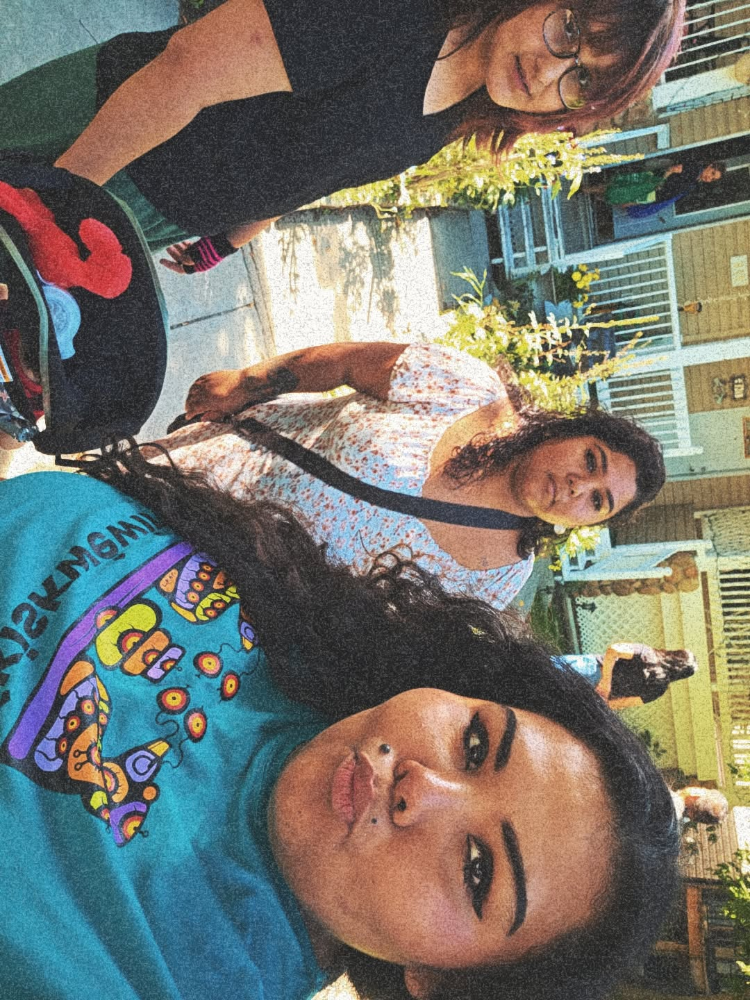

Baby Kash with his Grandpa Ruben Bunn at The Wolf Fm Radion Station in Sagkeeng, Manitoba
click meMy name is Adelina Redman, and I’m a proud mother to my 7-month-old son, Kash. I was born in Kamloops, BC, and I'm from Standing Buffalo, Saskatchewan. I graduated from high school in High River, Alberta, and later earned my Healthcare Assistant Program Certificate from Native Education College in July 2024. Both of my parents passed away—my mother when I was 12, and my father when I was 21. Despite these losses, I’ve been fortunate to receive incredible support and guidance from my aunts and cousins on both sides of my family. I’m deeply grateful for the love and strength they’ve shown me throughout my journey.
In August this year, my family took a road trip that was incredibly significant and meaningful to us. We traveled across Alberta, Saskatchewan, and Manitoba to visit our loved ones—but most importantly, to visit the resting place of my cousin, Larissa Bunn, on her home reserve in Sagkeeng, Manitoba. When Larissa passed away in May 2024, I wasn’t able to attend her funeral from Vancouver. So being able to make this trip meant a lot. Visiting her grave, checking in on her family, and paying my respects in person was an emotional but healing experience. It was also important for me to bring my baby boy, Kash, to meet more of his family. Watching him bond with his Grandpa Ruben Bunn and the rest of the Bunn family was such a beautiful and powerful moment—one that I will always cherish.
Before we made our way to Manitoba, our family attended the Standing Buffalo Powwow in Saskatchewan. It was a beautiful chance to reconnect with more of our family and celebrate our culture together. Along the way, we picked up my cousin Tiearra in Glendive, Montana. She had traveled a long way—taking the Greyhound bus all the way from Seattle, Washington to Montana—just to join us. She was determined to be there that weekend, not only to see family but also to visit her father's grave on the reserve. It had been almost 10 years or more since she’d been able to visit, ever since her dad passed away. Her visit was deeply emotional and important to her. That weekend, she and I shared a powerful moment: we cleaned her dad’s grave and my mom Lorelei’s grave together. We placed red roses on both, honoring their memory with love and care. It was something truly special for both of us. My baby Kash also had the chance to bond with his Aunt Tiearra and meet so many more family members along the way. Every stop on this journey was filled with emotion, love, and reconnection. Over the course of two weeks, we traveled, visited, healed, and made lasting memories. This trip was more than just a road trip—it was a spiritual journey for all of us. I’m so grateful we took it, and I’m even more thankful to be able to share the pictures and videos with you all. 💛
